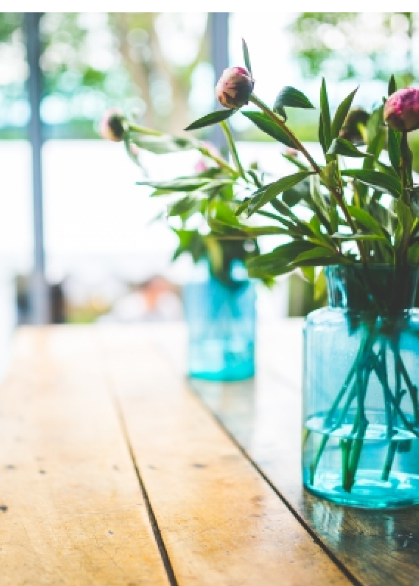
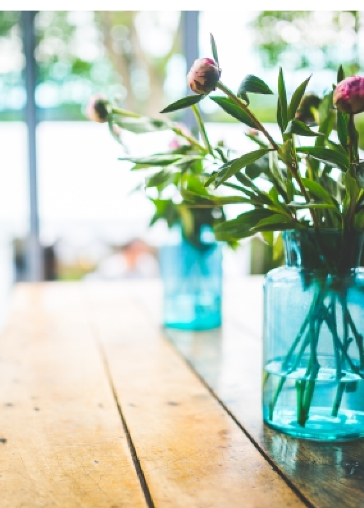
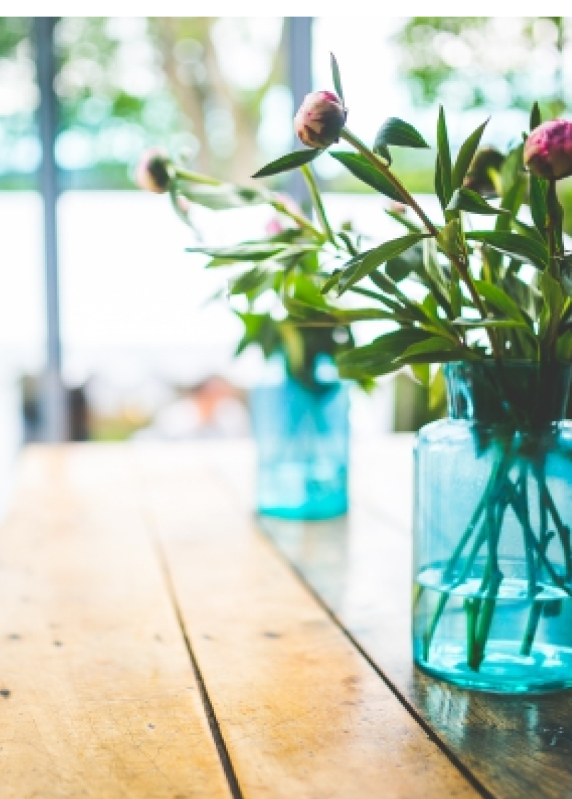
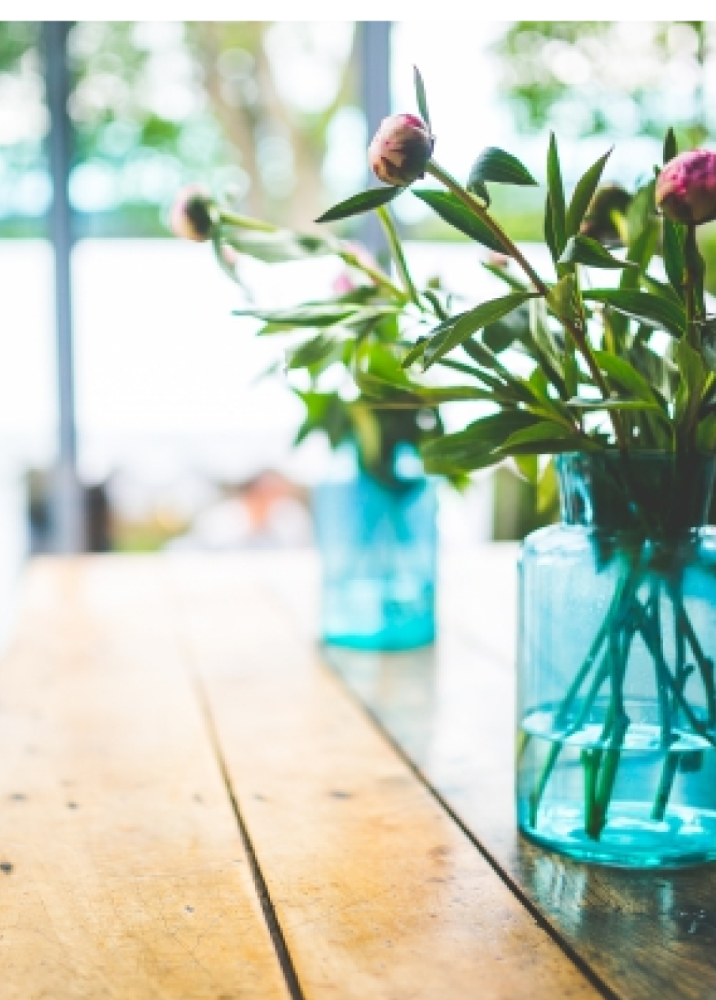

採用情報
接客が好きな方、カフェ好きはもちろんお花が好きな方、そしていつか自分のお店を持ちたいと思っている方など、お店を一緒に盛り上げてくださる方の応募をお待ちしております。 仕事内容： サービス、キッチン（経験者優遇）土日のみ、週２〜３の勤務も可能です。 住所、氏名、年齢、現職を明記の上、下記のメールアドレスまでご連絡ください。 折り返し募集要項などお送りいたします。 採用担当 佐藤 info-nappa69@nappa69.com

 



 
